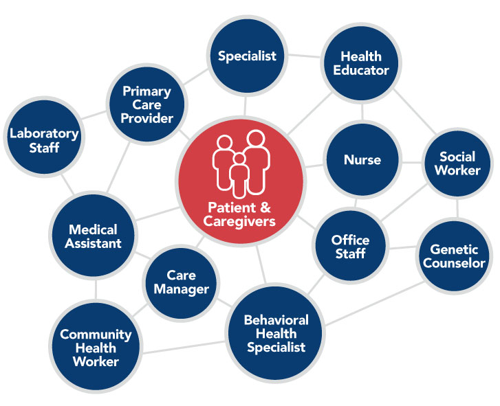
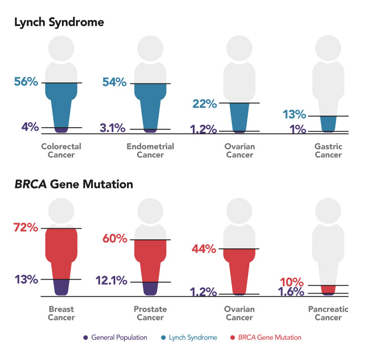

Goal 3: Strengthen Workforce Collaborations to Support Cancer Screening and Risk Assessment
Providers play an essential role in patients’ decisions about whether and when to be screened for cancer. However, competing demands make it difficult to thoroughly address each patient’s needs within the limited time available during an appointment, particularly in the primary care setting in which most decisions about cancer screening are made. There is a growing recognition that providers cannot do it all on their own. It is well established that multidisciplinary teams support delivery of high-quality care and reduce burnout among primary care providers.1 Team-based care has the potential to improve implementation of cancer screening. To accomplish this, supportive policies and a commitment to team-based care approaches are needed.
A team-based approach allows functions to be distributed across multiple people, creating opportunities for each team member to contribute to patient care. The ideal size and makeup of healthcare teams depend on several factors, including the clinical setting; the healthcare needs, demographics, and sociocultural features of the population being served; and assets of the community. Team members can include primary care providers (physicians, physician assistants, nurse practitioners), specialists, nurses, medical assistants, office staff, care managers, community health workers (CHWs), genetic counselors, social workers, behavioral health specialists, laboratory staff, and others (Figure 5). Patients—along with family members and caregivers involved in their healthcare and everyday lives—also are key team members and should be treated as such.
Figure 5
Healthcare Teams
Adapted from: National Academies of Sciences, Engineering, and Medicine. Implementing high-quality primary care: rebuilding the foundation of health care. McCauley L, Phillips RL Jr, Meisnere M, Robinson SK, editors. Washington (DC): The National Academies Press; 2021. Available from: https://www.nap.edu/catalog/25983/implementing-high-quality-primary-care-rebuilding-the-foundation-of-health
Recommendation 3.1
Empower healthcare team members to support screening.
Nurses, medical assistants, and office staff can collect family and personal health history (including smoking history), identify patients potentially eligible for cancer screening, initiate conversations about screening, and help coordinate recommended follow-up care. CHWs can connect people to healthcare and help identify and address barriers to cancer screening and follow-up care (see Recommendation 2.1) and respond to questions and concerns in culturally competent ways. Nurses or other team members can receive training to discuss tobacco cessation options with patients eligible for lung cancer screening who are active tobacco users.
Building and maintaining strong teams requires buy-in from team members and organizational leadership. This may include investment of resources and a commitment to fostering a culture of teamwork. Roles of team members must be clearly defined and communication channels established to ensure seamless integration and optimize clinical workflows. Information technology systems should be developed and used to facilitate communication and hand-offs among team members (see Goal 4). Team effectiveness should be evaluated regularly and improvements made as needed. Efforts should be made to create teams that represent the diversity of populations being served to help with cultural competency and improve health equity.
Payment policies can facilitate or restrict team-based care. Value-based payment models may be better able than traditional fee-for-service models to support team-based strategies to deliver high-quality care. It also is important that all members are empowered to apply their skills and training. Medicare coverage for lung cancer screening with low-dose computed tomography currently requires that the ordering physician or qualified nonphysician practitioner (e.g., physician assistant, nurse practitioner) conducts a counseling and shared decision-making visit with the patient.2 This requirement places the burden of shared decision-making on the provider, introducing a bottleneck that results in a barrier to this new, lifesaving screening modality.3 Primary care providers play a central role in recommending lung cancer screening to their patients; however, while shared decision-making is valuable, it is unrealistic to expect primary care providers to have the time and resources to individually and effectively perform this task with all patients eligible for lung cancer screening. Other team members can be incorporated into shared decision-making—including discussion of the benefits and potential harms of lung cancer screening with low-dose computed tomography—if they are provided with appropriate training and access to patient decision aids. If physicians can share the shared decision-making process with other team members, they will be able to implement lung cancer screening recommendations more broadly. Use of technologies such as telemedicine or chatbots to support shared decision-making also may help increase access to screening. Doing so would remove a barrier to screening and allow teams to more easily deliver high-quality, guideline-based care.
Recommendation 3.2
Expand access to genetic testing and counseling for cancer risk assessment.
Most cancer screening guidelines are intended for populations at average risk for cancer; however, some people are at elevated risk for cancer due to their personal or family history or because they harbor mutations in cancer susceptibility genes. These people may benefit from earlier, more frequent, or enhanced cancer screening or other risk-reducing interventions.4-7 It is estimated that 10 to 15 percent of cancers result from inherited mutations, also called germline mutations.8-10 For example, Lynch syndrome, which is characterized by mutations in DNA mismatch repair genes, and mutations in BRCA1 and BRCA2 dramatically elevate risk for multiple cancers (Figure 6).7
Figure 6
Increased Cancer Risk with Inherited Mutations in Cancer Susceptibility Genes
Note: For General Population, percentages shown are average lifetime risk of being diagnosed with the designated cancer type. For Lynch Syndrome and BRCA Gene Mutation, percentages represent the highest published estimated risk; risk varies based on the gene and mutation.
View Figure Sources
Sources: National Cancer Institute. Surveillance, Epidemiology, and End Results Program DevCan database: SEER 21 incidence and mortality, 2015-2017, with Kaposi sarcoma and mesothelioma. Bethesda (MD): NCI; 2021 Apr. Available from: https://seer.cancer.gov; National Cancer Institute. Genetics of colorectal cancer (PDQ): health professional version [Internet]. Bethesda (MD): NCI; [updated 2021 Jul 7; cited 2021 Nov 5]. Available from: https://www.cancer.gov/types/colorectal/hp/colorectal-genetics-pdq; National Cancer Institute. Genetics of breast and gynecologic cancers (PDQ): health professional version [Internet]. Bethesda (MD): NCI; [cited 2021 Nov 5]. Available from: https://www.cancer.gov/types/breast/hp/breast-ovarian-genetics-pdq; Nyberg T, et al. Eur Urol. 2020;77(1):24-35. Available from: https://www.ncbi.nlm.nih.gov/pubmed/31495749; Pilarski R. Am Soc Clin Oncol Educ Book. 2019;39:79-86. Available from: https://www.ncbi.nlm.nih.gov/pubmed/31099688
Currently, most people with mutations in cancer susceptibility genes are never identified or are not identified until after they are diagnosed with cancer (see Germline Genetic Testing for People Diagnosed with Cancer).11,12 It is estimated that among women who have not been diagnosed with breast cancer, fewer than 10 percent of BRCA mutation carriers have been identified, and at least 10 million high-risk women have not received recommended genetic testing for breast cancer risk genes.13,14 Men harbor BRCA1/2 mutations as frequently as women, but male carriers are identified at an even lower rate.15 For Lynch syndrome, more than 800,000 individuals remain undiagnosed.16 Providers should regularly collect thorough family and personal health histories to determine whether their patients should undergo genetic testing for cancer risk genes. Collection of this information should start before age 25 so that genetic testing can be recommended and any supplemental screening initiated according to the guidelines. If genetic testing is warranted, providers should provide information on risks and benefits, as well as the implications and limitations of genetic testing, so that patients can make informed decisions about undergoing genetic testing to identify germline mutations in cancer susceptibility genes.
GERMLINE GENETIC TESTING FOR PEOPLE DIAGNOSED WITH CANCER
The time of a cancer diagnosis is an opportunity to determine whether patients carry inherited, or germline, mutations that increase risk of other cancers. Many cancer patients have their tumors sequenced to inform cancer treatment planning, including potential use of precision therapies that target specific mutations. Performing germline genetic testing for hereditary cancer predisposition genes in concert with tumor sequencing can provide additional information on genetic risk with implications for the patient’s treatment and future cancer screening and surveillance. Studies of germline genetic testing in cancer patients have documented clinically actionable findings that were missed by tumor sequencing.
Results of germline genetic testing also have implications for family members. If a cancer patient is found to harbor a cancer-associated germline variant, cascade testing of family members can help identify other carriers. This may lead to increased screening adherence, enhanced screening, or other risk-reducing interventions.
The Panel supports assessment of eligibility for germline genetic testing for all people diagnosed with cancer. If variants of concern are identified, cascade testing of family members should be offered.
Sources: Samadder NJ, et al. JAMA Oncol. 2021;7(2):230-7. Available from: https://www.ncbi.nlm.nih.gov/pubmed/33126242; Lincoln SE, et al. JAMA Netw Open. 2020;3(10):e2019452. Available from: https://pubmed.ncbi.nlm.nih.gov/33026450
As demand for hereditary cancer genetic testing has increased, some payors have mandated consultation with a certified genetic counselor or geneticist prior to genetic testing to minimize inappropriate testing. Unfortunately, this policy creates an unnecessary barrier that results in fewer appropriate tests performed and longer turnaround times; racial/ethnic minority populations are disproportionately affected.17 The Panel believes the harms of limiting access to genetic testing far outweigh the risks of genetic testing without prior access to a certified genetic counselor. Healthcare providers manage a range of tests and information, and many are fully capable of determining eligibility for and conducting informed consent prior to genetic testing. This will optimize patient access to appropriate genetic testing and promote access to supplemental screening if warranted. It also will allow certified genetic counselors to focus on patients with the highest need, particularly those found to have pathogenic variants in cancer susceptibility genes or complex genetic situations. Allowing providers to order genetic tests should not reduce patient access to genetic counselors; any patient who prefers to speak to a genetic counselor before or after genetic testing should be able to do so. Providers who are uncomfortable discussing genetic testing should refer their patients to a genetic counselor.
Training and continuing education on genetics and genetic testing are critical to ensuring that providers are prepared to discuss various facets of genetic testing both before and after a patient undergoes testing (see Education and Training for Healthcare Teams). Some primary care providers report lack of confidence in interpreting and discussing genetic test results with patients.18 However, studies have shown that targeted education can increase knowledge and confidence in this area.19 Well-designed clinical decision support (CDS) tools also can help identify patients eligible for genetic testing and assist with management of results (see Goal 4).
EDUCATION AND TRAINING FOR HEALTHCARE TEAMS
All members of the healthcare team—physicians, nurse practitioners, physician assistants, nurses, CHWs, behavioral health experts, patient navigators, and others—must have the knowledge and skills to effectively recommend and discuss appropriate cancer screening. Although the depth of knowledge needed varies depending on their role, all members of the team should learn about:
- Cancer risk assessment, including the role of pathogenic variants in cancer susceptibility genes
- Cancer screening modalities and guidelines, including benefits and potential harms of screening
- Management of cancer screening results, including recommended follow-up care in the event of an abnormal screening test result
- Shared decision-making, including discussion of benefits and potential harms of cancer screening and genetic testing
- The role of stigma and inherent bias in healthcare and strategies to overcome them
- The importance of cultural competency
- Effective use of telemedicine
- Functioning as part of a team.
Training and education on cancer screening and related topics should take place across the career continuum. Postgraduate training programs (e.g., medical schools, nursing schools) should include these topics in curricula. Residency training programs and certification boards should prioritize knowledge related to cancer risk reduction and screening. Professional societies, guideline makers, and other organizations should develop continuing medical education courses to ensure that team members maintain and increase competencies in these areas throughout their careers. These topics also should be covered as part of certification programs and on-the-job training for nonprovider team members (e.g., CHWs). Healthcare systems and medical offices also can increase the knowledge and competencies of team members in these areas through quality improvement initiatives.
Importantly, providers should have established relationships with genetic counselors so that timely follow-up appointments can be made for patients with complex results or additional questions. The demand for genetic counselors is high and will undoubtedly continue to rise as the availability and uptake of genetic testing for various diseases increase. There currently is a shortage of certified genetic counselors involved in direct patient care,20 and the Panel heard many accounts of long waits for appointments with genetic counselors. The numbers of genetic counseling programs and trainees have been increasing steadily over the past several years,21 though supply has not yet met the rapidly expanding patient demand. The interorganizational Genetic Counselor Workforce Working Group22 should continue its work to ensure that a robust and well-trained genetic counselor workforce is available to meet the needs of patients in the emerging genomic era of medicine. Counseling via telemedicine should be used as needed to increase access in rural/remote areas and avoid delays based on availability of in-person appointments.
Most health insurers cover genetic counseling for people who meet personal and family history criteria for testing. Most private insurers will reimburse certified genetic counselors who provide this service; however, genetic counselors are not recognized as healthcare providers by CMS, which means that they cannot be reimbursed directly through Medicare.23 This would allow genetic counselors to contribute their specialized knowledge and skills to medical teams working to deliver high-quality care to patients at elevated risk for cancer and other diseases. This issue has gained the attention of some lawmakers, resulting in the introduction of the Access to Genetic Counselor Services Act in the U.S. House of Representatives in 201924 and reintroduction in both the U.S. House of Representatives and U.S. Senate in 2021.25,26 The Panel urges Congress to take up this issue and amend the Medicare program to provide direct coverage for services provided by genetic counselors.
References
- National Academies of Sciences, Engineering, and Medicine. Implementing high-quality primary care: rebuilding the foundation of health care. McCauley L, Phillips RL Jr, Meisnere M, Robinson SK, editors. Washington (DC): The National Academies Press; 2021. Available from: https://www.nap.edu/catalog/25983/implementing-high-quality-primary-care-rebuilding-the-foundation-of-health
- Centers for Medicare & Medicaid Services. Decision memo for screening for lung cancer with low dose computed tomography (LDCT) (CAG-00439N). Baltimore (MD): CMS; 2015 Feb 5. Available from: https://www.cms.gov/medicare-coverage-database/details/nca-decision-memo.aspx?NCAId=274
- Hoffman RM, Reuland DS, Volk RJ. The Centers for Medicare & Medicaid Services requirement for shared decision-making for lung cancer screening. JAMA. 2021;325(10):933-4. Available from: https://www.ncbi.nlm.nih.gov/pubmed/33687471
- Giardiello FMS, Allen JI, Axilbund JE, et al. Guidelines on genetic evaluation and management of Lynch syndrome: a consensus statement by the U.S. Multi-Society Task Force on colorectal cancer. Gastroenterology. 2014;147(2):502-26. Available from: https://www.ncbi.nlm.nih.gov/pubmed/25043945
- Monticciolo DL, Newell MS, Moy L, et al. Breast cancer screening in women at higher-than-average risk: recommendations from the ACR. J Am Coll Radiol. 2018;15(3 Pt A):408-14. Available from: https://www.ncbi.nlm.nih.gov/pubmed/29371086
- Saslow D, Boetes C, Burke W, et al. American Cancer Society guidelines for breast screening with MRI as an adjunct to mammography. CA Cancer J Clin. 2007;57(2):75-89. Available from: https://www.ncbi.nlm.nih.gov/pubmed/17392385
- National Cancer Institute. Cancer genetics overview (PDQ): health professional version [Internet]. Bethesda (MD): NCI; [updated 2021 Jul 6; cited 2021 Jul 19]. Available from: https://www.cancer.gov/about-cancer/causes-prevention/genetics/overview-pdq
- Samadder NJ, Riegert-Johnson D, Boardman L, et al. Comparison of universal genetic testing vs guideline-directed targeted testing for patients with hereditary cancer syndrome. JAMA Oncol. 2021;7(2):230-7. Available from: https://www.ncbi.nlm.nih.gov/pubmed/33126242
- National Cancer Institute. The genetics of cancer [Internet]. Bethesda (MD): NCI; [updated 2017 Oct 12; cited 2021 Jul 19]. Available from: https://www.cancer.gov/about-cancer/causes-prevention/genetics
- Stadler ZK, Maio A, Chakravarty D, et al. Therapeutic implications of germline testing in patients with advanced cancers. J Clin Oncol. 2021;39(24):2698-709. Available from: https://www.ncbi.nlm.nih.gov/pubmed/34133209
- Grzymski JJ, Elhanan G, Morales Rosado JA, et al. Population genetic screening efficiently identifies carriers of autosomal dominant diseases. Nat Med. 2020;26(8):1235-9. Available from: https://www.ncbi.nlm.nih.gov/pubmed/32719484
- Manickam K, Buchanan AH, Schwartz MLB, et al. Exome sequencing-based screening for BRCA1/2 expected pathogenic variants among adult biobank participants. JAMA Netw Open. 2018;1(5):e182140. Available from: https://www.ncbi.nlm.nih.gov/pubmed/30646163
- Hughes KS. Genetic testing: what problem are we trying to solve? J Clin Oncol. 2017;35(34):3789-91. Available from: https://www.ncbi.nlm.nih.gov/pubmed/28820645
- Drohan B, Roche CA, Cusack JC Jr, Hughes KS. Hereditary breast and ovarian cancer and other hereditary syndromes: using technology to identify carriers. Ann Surg Oncol. 2012;19(6):1732-7. Available from: https://www.ncbi.nlm.nih.gov/pubmed/22427173
- Childers KK, Maggard-Gibbons M, Macinko J, Childers CP. National distribution of cancer genetic testing in the United States: evidence for a gender disparity in hereditary breast and ovarian cancer. JAMA Oncol. 2018;4(6):876-9. Available from: https://www.ncbi.nlm.nih.gov/pubmed/29710084
- Hampel H, de la Chapelle A. The search for unaffected individuals with Lynch syndrome: do the ends justify the means? Cancer Prev Res (Phila). 2011;4(1):1-5. Available from: https://www.ncbi.nlm.nih.gov/pubmed/21205737
- Whitworth P, Beitsch P, Arnell C, et al. Impact of payer constraints on access to genetic testing. J Oncol Pract. 2017;13(1):e47-e56. Available from: https://www.ncbi.nlm.nih.gov/pubmed/28084878
- Laforest F, Kirkegaard P, Mann B, Edwards A. Genetic cancer risk assessment in general practice: systematic review of tools available, clinician attitudes, and patient outcomes. Br J Gen Pract. 2019;69(679):e97-e105. Available from: https://www.ncbi.nlm.nih.gov/pubmed/30510097
- Paneque M, Turchetti D, Jackson L, et al. A systematic review of interventions to provide genetics education for primary care. BMC Fam Pract. 2016;17(1):89. Available from: https://pubmed.ncbi.nlm.nih.gov/27445117
- Hoskovec JM, Bennett RL, Carey ME, et al. Projecting the supply and demand for certified genetic counselors: a workforce study. J Genet Couns. 2018;27(1):16-20. Available from: https://www.ncbi.nlm.nih.gov/pubmed/29052810
- U.S. Government Accountability Office. Genetic services: information on genetic counselor and medical geneticist workforces (GAO-20-593). Washington (DC): GAO; 2020 Jul. Available from: https://www.gao.gov/assets/gao-20-593.pdf
- American Board of Genetic Counseling. The Genetic Counselor Workforce Working Group [Internet]. Overland Park (KS): ABGC; [cited 2021 Oct 2]. Available from: https://www.abgc.net/research-resources/latest-research
- Doyle N, Cirino A, Trivedi A, Flynn M. Exploring barriers to payer utilization of genetic counselors. J Genet Couns. 2015;24(1):122-33. Available from: https://pubmed.ncbi.nlm.nih.gov/pubmed/25138080
- 116th Congress (2019-2020). Access to Genetic Counselor Services Act of 2019, H.R.3235. (2019 Jun 12). Available from: https://www.congress.gov/bill/116th-congress/house-bill/3235/text
- 117th Congress (2021-2022). Access to Genetic Counselor Services Act of 2021, H.R.2144. (2021 Mar 23). Available from: https://www.congress.gov/bill/117th-congress/house-bill/2144
- 117th Congress (2021-2022). Access to Genetic Counselor Services Act of 2021, S.1450. (2021 Apr 29). Available from: https://www.congress.gov/bill/117th-congress/senate-bill/1450